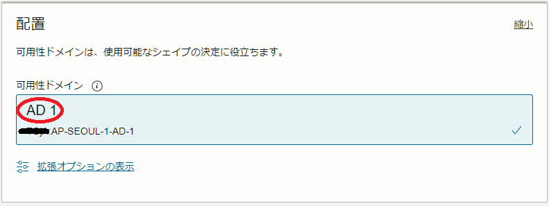
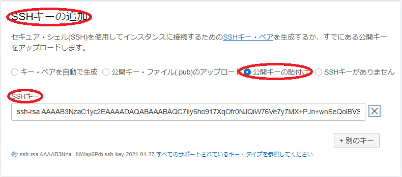
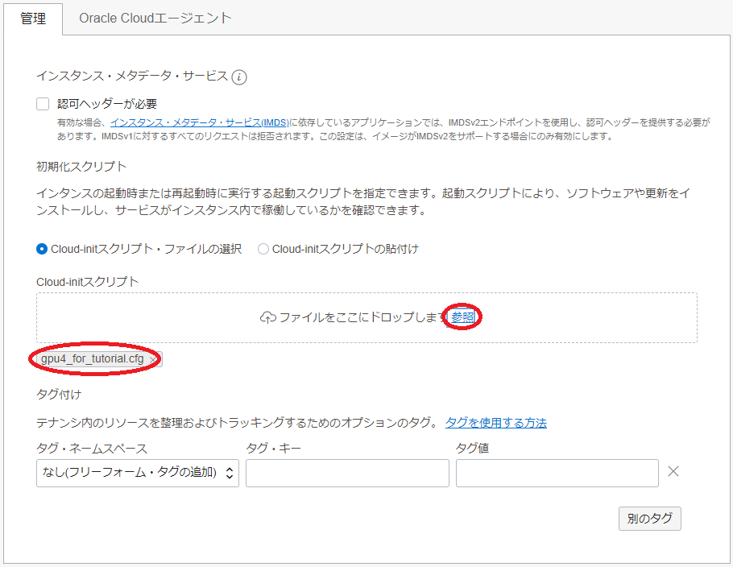
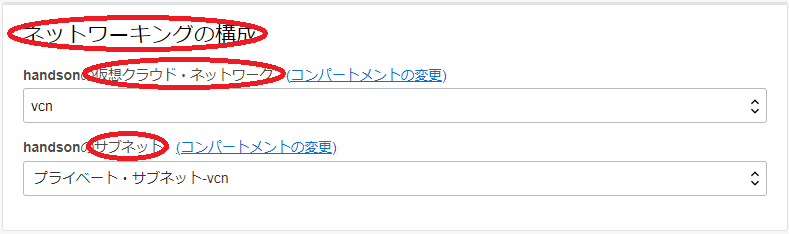
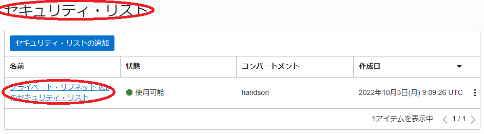
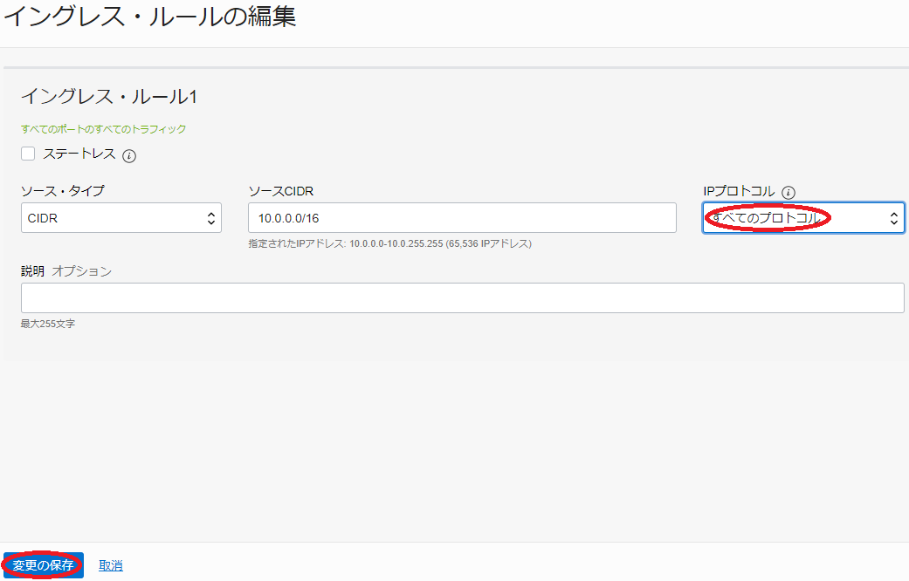
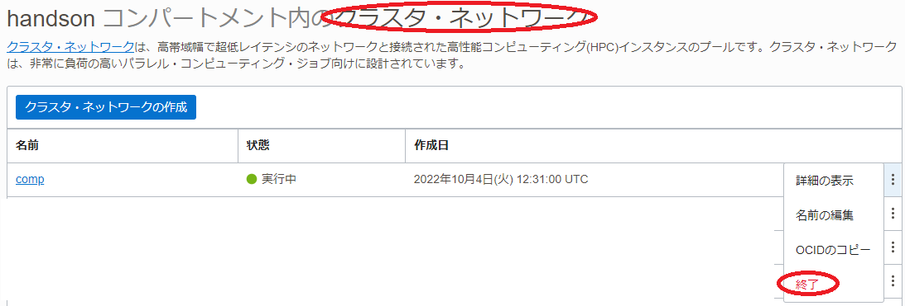

このチュートリアルは、AIや機械学習ワークロードに最適なNVIDIA A100 40/80 GB 8枚と100 GbpsのRDMA対応ネットワークインタフェース16ポート搭載するGPUノード（ BM.GPU4.8/BM.GPU.GM4.8 ）を クラスタ・ネットワーク を使用してノード間接続し、1ノードでは搭載しきれないGPUを必要とする大規模なAI・機械学習ワークロードを実行するための分散機械学習に対応したDockerコンテナをGPUクラスタ上に構築、複数ノードに跨るGPU間の通信性能を NCCL（NVIDIA Collective Communication Library） テストプログラム（ NCCL Tests ）で検証後、分散機械学習のサンプルプログラムを実行、その性能を検証します。
このチュートリアルは、分散機械学習フレームワークに以下2種類を取り上げ、それぞれ3章と4章でこれらを解説しています。該当する章を参照することで、自身のワークロードに合わせた環境構築が可能です。
-
Horovod（ 3.Horovodを使用するGPUクラスタ環境構築 ）
-
MultiWorkerMirroredStrategy（ 4.MultiWorkerMirroredStrategyを使用するGPUクラスタ環境構築 ）
よって本チュートリアルの進め方は、まず自身のワークロードに合わせて上記2種類からどちらを使用するか選択し、0章 → 1章 → 2章 → 3章 or 4章 → 5章と進めます。
このチュートリアルで作成する環境は、ユーザ管理、ホスト名管理、ファイル共有、プログラム開発環境、コンテナオーケストレーション等、必要なソフトウェア環境をこの上に整備し、ご自身の要件に沿ったGPUクラスタを構築する際の基礎インフラストラクチャとして利用することが可能です。
なお、これらのクラスタ管理に必要なソフトウェアの導入までを自動化する HPCクラスタスタック も利用可能で、詳細は GPUクラスタを構築する(スタティッククラスタ自動構築編) を参照ください。

所要時間 : 約2時間
前提条件 : GPUクラスタを収容するコンパートメント(ルート・コンパートメントでもOKです)の作成と、このコンパートメントに対する必要なリソース管理権限がユーザーに付与されていること。
注意 : チュートリアル内の画面ショットについては、OCIの現在のコンソール画面と異なっている場合があります。
0. GPUクラスタ作成事前作業
0-0. 概要
GPUクラスタを構成する クラスタ・ネットワーク とGPUノードは、OCIコンソールからクラスタ・ネットワークを作成することで、GPUノードをクラスタ・ネットワークに接続したGPUクラスタとしてデプロイされます。
このため、このGPUノードをTCP接続するVCNと、インターネットから直接アクセス出来ないプライベートサブネットに通常接続されるGPUノードにログインする際の踏み台となるBastionノードを、GPUクラスタ作成前に予め用意する必要があります。
本章は、これらGPUクラスタ作成の前提となるリソースを作成します。
0-1. VCN作成
本章は、GPUノードをTCP接続するVCNを作成します。 VCNの作成は、以下チュートリアルページ クラウドに仮想ネットワーク(VCN)を作る の手順通りに実行し、
https://oracle-japan.github.io/ocitutorials/beginners/creating-vcn
以下のリソースを作成します。
- VCN（10.0.0.0/16）
- パブリックサブネット（10.0.0.0/24）
- プライベートサブネット（10.0.1.0/24）
- インターネット・ゲートウェイ（パブリックサブネットにアタッチ）
- NATゲートウェイ（プライベートサブネットにアタッチ）
- サービス・ゲートウェイ（プライベートサブネットにアタッチ）
- ルート表 x 2（パブリックサブネットとプライベートサブネットにアタッチ）
- セキュリティリスト x 2（パブリックサブネットとプライベートサブネットにアタッチ）
このVCNは、セキュリティリストで以下のアクセス制限が掛けられています。
- インターネットからのアクセス：パブリックサブネットに接続されるインスタンスの22番ポート（SSH）に限定
- インターネットへのアクセス：インターネット上の任意のIPアドレス・ポートに制限なくアクセス可能
0-2. Bastionノード作成
本章は、GPUノードにログインする際の踏み台となるBastionノードを作成します。 Bastionノードの作成は、以下チュートリアルページ インスタンスを作成する の手順を参考に、
https://oracle-japan.github.io/ocitutorials/beginners/creating-compute-instance
ご自身の要件に沿ったインスタンスを、先の手順で作成したVCNとパブリックサブネットを指定して作成します。本チュートリアルは、以下属性のインスタンスをBastionノードとして作成します。
- イメージ : Oracle Linux 7.9
- シェイプ : VM.Optimized3.Flex（1 OCPU）
- SSHキーの追加 : Bastionノードにログインする際使用するSSH秘密鍵に対応する公開鍵
次に、このBastionノード上でSSHの鍵ペアを作成します。このSSH鍵は、BastionノードからGPUノードにログインする際に使用します。 先のチュートリアル インスタンスを作成する に記載のインスタンスへの接続方法に従いBastionノードにopcユーザでSSHログインし、以下のコマンドで全ての問いにエンターキーを入力（パスフレーズ無し・デフォルトの格納場所）してSSH鍵ペアを作成、作成された公開鍵を後のクラスタ・ネットワーク作成手順で指定します。
> ssh-keygen
Generating public/private rsa key pair.
Enter file in which to save the key (/home/opc/.ssh/id_rsa):
Enter passphrase (empty for no passphrase):
Enter same passphrase again:
Your identification has been saved in /home/opc/.ssh/id_rsa.
Your public key has been saved in /home/opc/.ssh/id_rsa.pub.
The key fingerprint is:
SHA256:Ska1aH1fQkN+Ahzi6xnqICSEHN8HUKDlujhEagu2Uc8 opc@bastion
The keys randomart image is:
+---[RSA 2048]----+
| . ++o o.oo+ |
|o * . .= o.+ . |
|.= + .+.+ . + o |
|+ o oo. o . = |
|+*. Eo S . |
|*o= o + o |
|o+. . o o |
| . . o |
| . |
+----[SHA256]-----+
> cat ~/.ssh/id_rsa.pub
ssh-rsa AAAAB3NzaC1yc2EAAAADAQABAAABAQC7Lna2m3TPiPKL/lHNK4GK2bkADRzm4674uwO9PHUqEPKVv+HBhTZ+zHOPSkYsOEubgeB9xpuKe+Z7ats0RbdXzT1bDWxcsvrMOdUVHQ9zv54eBSz+wEJO08zuxCjetQ2//6NRlYzoBs5/T1+DWg7lJuNadeyqXf1IaZGxRyfbCyXPzOnhL3TS/S7ydN0/313PsqAYj7PBNlx86WT/0qeNYsefjVmn54PKp1waNDQbOkiXi9Emx9uIKA1TCMCVSauZEI274P6orPvwggbX/HZ5Q8eRta2uw3LmzSRJUlrLBxi5xzhVOSNOXl29y2+U5+Q5/F2AxGSxUbW18AdOihuX opc@bastion
次に、以降作成するGPUノードの名前解決をインスタンス名で行うため、テクニカルTips 計算ノードの効果的な名前解決方法 の手順を実施します。
1. GPUクラスタ作成
1-0. 概要
クラスタ・ネットワーク は、作成時に指定する インスタンス構成 に基づいて インスタンス・プール が作成時に指定するノード数のGPUノードをデプロイし、これをクラスタ・ネットワークに接続します。
クラスタ・ネットワークに接続するGPUノードは、OS起動時点でクラスタ・ネットワークに接続するネットワークインターフェースが作成されていないため、 cloud-init でこの作成を行います。また本チュートリアルは、GPUノードに装備されるNVMeローカルディスクのファイルシステム作成も、このcloud-initから行います。
以上より、GPUクラスタの作成は、以下の手順を経て行います。
- cloud-init設定ファイル（cloud-config）作成
- インスタンス構成作成
- クラスタ・ネットワーク作成
本チュートリアルは、2ノードのBM.GPU4.8を使用してGPUクラスタを構築しますが、 BM.GPU.GM4.8 をGPUノードとするGPUクラスタを構築する際も、シェイプ指定の変更で対応可能です。
1-1. cloud-config作成
本章は、 cloud-init 設定ファイル（cloud-config）を作成します。
本チュートリアルは、このcloud-initを以下の目的で使用します。
- Docker Community Editionインストール
- NVIDIA Container Toolkitインストール
- NVMeローカルディスクファイルシステム作成
- firewalld停止
- クラスタ・ネットワーク 接続用ネットワークインターフェース起動
- ルートファイルシステム拡張
- Dockerイメージプル
以下は、本チュートリアルで使用するBM.GPU4.8用のcloud-configで、OCIコンソールを実行している端末上にテキストファイルで保存します。
#cloud-config
yum_repos:
# To install docker community edition
ol7_developer:
name: Oracle Linux $releasever Development Packages ($basearch)
baseurl: https://yum$ociregion.$ocidomain/repo/OracleLinux/OL7/developer/$basearch/
enabled: true
gpgcheck: true
gpgkey: file:///etc/pki/rpm-gpg/RPM-GPG-KEY-oracle
docker-ce-stable:
name: Docker CE Stable - $basearch
baseurl: https://download.docker.com/linux/centos/$releasever/$basearch/stable
enabled: true
gpgcheck: true
gpgkey: https://download.docker.com/linux/centos/gpg
# To install NVIDIA container
libnvidia-container:
name: libnvidia-container
baseurl: https://nvidia.github.io/libnvidia-container/stable/centos7/$basearch
enabled: true
gpgcheck: true
gpgkey: https://nvidia.github.io/libnvidia-container/gpgkey
libnvidia-container-experimental:
name: libnvidia-container-experimental
baseurl: https://nvidia.github.io/libnvidia-container/experimental/centos7/$basearch
enabled: true
gpgcheck: true
gpgkey: https://nvidia.github.io/libnvidia-container/gpgkey
packages:
# Install Docker community edition and NVIDIA container toolkit
- docker-ce
- nvidia-container-toolkit
runcmd:
# NVMe local storage setting
- vgcreate nvme /dev/nvme0n1 /dev/nvme1n1 /dev/nvme2n1 /dev/nvme3n1
- lvcreate -l 100%FREE nvme
- mkfs.xfs -L localscratch /dev/nvme/lvol0
- mkdir -p /mnt/localdisk
- echo "LABEL=localscratch /mnt/localdisk/ xfs defaults,noatime 0 0" >> /etc/fstab
- mount /mnt/localdisk
# Stop firewalld
- systemctl stop firewalld
- systemctl disable firewalld
# Set up cluster network interface
- systemctl start oci-rdma-configure
# Expand root file system to those set by instance configuration
- /usr/libexec/oci-growfs -y
# Pull Horovod/TensorFlow docker images
- systemctl start docker
- systemctl enable docker
- docker pull horovod/horovod:latest
- docker pull nvcr.io/nvidia/tensorflow:22.11-tf2-py3
このcloud-configで行っているクラスタ・ネットワーク接続用ネットワークインターフェース起動は、クラスタ・ネットワーク対応OSイメージに含まれるsystemdのサービス oci-rdma-configure を使用しますが、この詳細はテクニカルTips クラスタ・ネットワーク接続用ネットワークインターフェース作成方法 を参照ください。
1-2. インスタンス構成作成
本章は、 インスタンス構成 を作成します。
-
OCIコンソールにログインし、GPUクラスタをデプロイするリージョンを選択後、 コンピュート → インスタンス構成 とメニューを辿ります。
-
表示される以下画面で、インスタンス構成の作成 ボタンをクリックします。

-
表示される インスタンス構成の作成 画面で、以下の情報を入力し 作成 ボタンをクリックします。なお、ここに記載のないフィールドは、デフォルトのままとします。
3.1 インスタンス構成情報 フィールド
- 名前 ：インスタンス構成に付与する名前
- コンパートメントに作成 ：インスタンス構成を作成するコンパートメント

3.2 インスタンスの作成先のコンパートメント フィールド：インスタンスをデプロイするコンパートメント

3.3 配置 フィールド
- 可用性ドメイン ：インスタンスをデプロイする可用性ドメイン

3.4 イメージとシェイプ フィールド

- イメージ ：Oracle Linux 7 - GPU Cluster Networking Image (イメージの変更 ボタンをクリックして表示される以下 イメージの選択 サイドバーで Marketplace アイコンを選択し検索フィールドに gpu と入力して表示される Oracle Linux 7 - GPU Cluster Networking Image を選択し イメージ・ビルド フィールドで OracleLinux-7-RHCK-3.10.0-OFED-5.4-3.6.8.1-GPU-515-2023.01.10-0 を選択し イメージの選択 ボタンをクリック）

- Shape ：BM.GPU4.8 (Change Shape ボタンをクリックして表示される以下 すべてのシェイプの参照 サイドバーで ベア・メタル・マシン をクリックして表示される BM.GPU4.8 を選択し 次のドキュメントを確認した上でこれに同意します チェックボックスをチェックし シェイプの選択 ボタンをクリック）

3.5 ネットワーキング フィールド
- プライマリ・ネットワーク ： 先に作成したVCNを選択
- サブネット ：先に作成したプライベートサブネットを選択

3.6 SSHキーの追加 フィールド
- SSHキー ：先にBastionノードで作成したSSH鍵の公開鍵（ 以下 公開キーの貼付け ラジオボタンを選択することで入力フィールドを表示）

3.7 ブート・ボリューム フィールド
- カスタム・ブート・ボリューム・サイズを指定します ： チェック
- ブート・ボリューム・サイズ(GB) ：100

3.8 管理 フィールド（以下 拡張オプションの表示 ボタンを選択して表示）

- cloud-initスクリプト ：先に作成したcloud-init設定ファイル（cloud-config）を選択（ 参照 ボタンでファイルを選択）

1-3. クラスタ・ネットワーク作成
本章は、 クラスタ・ネットワーク を作成します。
-
OCIコンソールにログインし、GPUクラスタをデプロイするリージョンを選択後、 コンピュート → クラスタ・ネットワーク とメニューを辿ります。
-
表示される以下画面で、クラスタ・ネットワークの作成 ボタンをクリックします。

-
表示される クラスタ・ネットワークの作成 画面で、以下の情報を入力し クラスタ・ネットワークの作成 ボタンをクリックします。なお、ここに記載のないフィールドは、デフォルトのままとします。
3.1 名前 フィールド：クラスタ・ネットワークに付与する名前

3.2 コンパートメントに作成 フィールド：クラスタ・ネットワークをデプロイするコンパートメント

3.2 可用性ドメイン フィールド：クラスタ・ネットワークをデプロイする可用性ドメイン
3.3 ネットワーキングの構成 フィールド
- 仮想クラウド・ネットワーク ：先に作成したVCNを選択
- サブネット ：先に作成したプライベートサブネットを選択

3.4 インスタンス・プールの構成 フィールド
- インスタンス・プール名 ：作成されるインスタンス・プールに付与する名前
- インスタンス数 ：2（デプロイするGPUノードのノード数）
- インスタンス構成 ：先に作成したインスタンス構成

-
表示される以下 クラスタ・ネットワーク作業リクエスト 画面で、左上のステータスが プロビジョニング中 と表示されれば、クラスタ・ネットワークとGPUノードの作成が実施されています。

ステータスが 実行中 となれば、クラスタ・ネットワークとGPUノードの作成が完了しています。
2. GPUノード確認
本章は、デプロイされたGPUノードにログインし、環境を確認します。
2.1. GPUノードログイン
GPUノードは、プライベートサブネットに接続されており、インターネットからログインすることが出来ないため、Bastionノードを経由してSSHログインします。BastionノードからGPUノードへのログインは、GPUノードのインスタンス名を使用します。
GPUノードのインスタンス名は、OCIコンソールでGPUノードをデプロイしたリージョンを選択後、 コンピュート → インスタンス とメニューを辿り、以下のインスタンス一覧からそのインスタンス名を確認します。
またこの画面は、GPUノードのIPアドレスも表示しており、これを使用してBastionノードからSSHログインすることも可能です。
GPUノードへのログインは、以下のようにBastionノードからopcユーザでSSHログインします。
> ssh inst-d5ige-comp
The authenticity of host 'inst-d5ige-comp (10.0.2.67)' cannot be established.
ECDSA key fingerprint is SHA256:Iro630ws/Fm3gbc3VNPp9BQ+AJnN9K5fcC2ZbzjJVXs.
ECDSA key fingerprint is MD5:2d:52:32:d9:43:24:5a:85:85:a9:aa:08:12:bf:fa:bb.
Are you sure you want to continue connecting (yes/no)? yes
Warning: Permanently added 'inst-d5ige-comp,10.0.2.67' (ECDSA) to the list of known hosts.
2.2. cloud-init完了確認
cloud-init は、GPUノードが起動してSSHログインできる状態であっても、その処理が継続している可能性があるため、以下コマンドでそのステータスを表示し、 done となっていることでcloud-initの処理完了を確認します。
ステータスが running の場合は、cloud-initの処理が継続中のため、処理が完了するまで待ちます。
> sudo cloud-init status
status: done
2.3. GPUノードファイルシステム確認
cloud-initが完了したGPUノードは、以下のようにNVMe領域が/mnt/localdiskにマウントされています。
> df -h /mnt/localdisk
Filesystem Size Used Avail Use% Mounted on
/dev/mapper/nvme-lvol0 25T 34M 25T 1% /mnt/localdisk
2.4. Dockerコンテナイメージ確認
cloud-initが完了したGPUノードは、以下のように2種類のDockerコンテナイメージがプルされています。
> sudo docker images
REPOSITORY TAG IMAGE ID CREATED SIZE
nvcr.io/nvidia/tensorflow 22.11-tf2-py3 a88317ae0b1b 3 weeks ago 14.4GB
horovod/horovod latest f16647de3f02 2 months ago 14.2GB
3. Horovodを使用するGPUクラスタ環境構築
3-1. Dockerコンテナ環境構築
3-1-0. 概要
本章は、後の章で実行するNCCL TestsとHorovodのサンプルプログラムを実行するHorovod用Dockerコンテナを起動するため、必要な環境構築作業を行います。
NCCL TestsとHorovodのサンプルプログラムは、コンテナを跨るプログラム実行のコントローラとしてMPIを使用します。ここで使用するMPIは、Horovod用Dockerコンテナに予め含まれる、OpenMPIです。
OpenMPIをコンテナ間で実行するためには、MPIプログラムをmpirun等で起動するコンテナ（いわゆるヘッドノード）からMPIプログラム実行に参加する他の全てのコンテナにパスフレーズ無しでSSH接続できる必要があります。
またOpenMPIの実行は、これを実行するコンテナ間で必要なポートにアクセス出来る必要があるため、GPUノードが接続されるプライベートサブネットのセキュリティリストを修正する必要があります。
以上より、本章で実施するDockerコンテナ環境構築は、以下の手順を経て行います。
- コンテナ間SSH接続環境構築
- プライベートサブネットセキュリティリスト修正
- Horovod用Dockerコンテナ起動
3-1-1. コンテナ間SSH接続環境構築
本章は、先にBastionノードで作成したSSH秘密鍵を含む.sshディレクトリをGPUノードにコピーし、後のコンテナ起動時にこのディレクトリをコンテナにマウントすることで、コンテナ間のパスフレーズ無しSSH接続環境を実現します。
まず初めに、テクニカルTips 計算ノードのホスト名リスト作成方法 の手順を実施し、以下のように全てのGPUノードのホスト名を含むホスト名リストをBastionノード上にファイル名 hostlist.txt で作成します。
inst-d5ige-comp
inst-swgen-comp
次にこのホスト名リストを使用し、Bastionノードのopcユーザで以下コマンドを実行、全GPUノードのホストキーを含むknown_hostsファイルを作成します。この際、GPUノード毎に接続確認を求められるため、全てに yes を入力します。
> for hname in `cat hostlist.txt`; do echo $hname; ssh $hname hostname; done
inst-d5ige-comp
inst-d5ige-comp
inst-swgen-comp
The authenticity of host 'inst-swgen-comp (10.0.2.242)' cannot be established.
ECDSA key fingerprint is SHA256:koWs+bKLzf78RQsZ+mQhvwxEQTu/72St2DiVyVqmtl4.
ECDSA key fingerprint is MD5:68:b4:e0:37:f1:9a:36:c7:a5:3c:69:9f:91:d5:e0:34.
Are you sure you want to continue connecting (yes/no)? yes
Warning: Permanently added 'inst-swgen-comp,10.0.2.242' (ECDSA) to the list of known hosts.
inst-swgen-comp
次に、Bastionノードのopcユーザで以下コマンドを実行、Bastionノードで作成した秘密鍵を使ったSSHログインを許可します。
> cat ~/.ssh/id_rsa.pub >> ~/.ssh/authorized_keys
次に、Bastionノードのopcユーザで以下コマンドを実行、~opc/.sshディレクトリをアーカイブしてこれを全GPUノードにコピーします。
> cd ~
> tar -cvf /tmp/ssh.tar ./.ssh
./.ssh/
./.ssh/id_rsa
./.ssh/known_hosts
./.ssh/id_rsa.pub
./.ssh/authorized_keys
> for hname in `cat hostlist.txt`; do echo $hname; scp /tmp/ssh.tar $hname:/tmp/; done
inst-d5ige-comp
ssh.tar 100% 10KB 9.0MB/s 00:00
inst-swgen-comp
ssh.tar 100% 10KB 11.5MB/s 00:00
次に、Bastionノードのopcユーザで以下コマンドを実行、先のアーカイブをGPUノードの/horovodディレクトリに展開します。
> for hname in `cat hostlist.txt`; do echo $hname; ssh $hname "sudo mkdir /horovod"; done
inst-d5ige-comp
inst-swgen-comp
> for hname in `cat hostlist.txt`; do echo $hname; ssh $hname "sudo tar --no-same-owner -xvf /tmp/ssh.tar -C /horovod/"; done
inst-d5ige-comp
./.ssh/
./.ssh/id_rsa
./.ssh/id_rsa.pub
./.ssh/authorized_keys
./.ssh/known_hosts
inst-swgen-comp
./.ssh/
./.ssh/id_rsa
./.ssh/id_rsa.pub
./.ssh/authorized_keys
./.ssh/known_hosts
3-1-2. プライベートサブネットセキュリティリスト修正
本章は、プライベートサブネットのセキュリティリストを以下の手順で修正します。
-
OCIコンソールにログインし、GPUノードをデプロイしたリージョンを選択後、 ネットワーキング → 仮想クラウド・ネットワーク とメニューを辿ります。
-
表示される画面で、先に作成した仮想クラウド・ネットワークをクリックします。
-
表示される以下 サブネット フィールドで、先に作成したプライベートサブネットをクリックします。

-
表示される以下 セキュリティ・リスト フィールドで、プライベートサブネットに適用されているセキュリティリストをクリックします。

-
表示される以下 イングレス・ルール フィールドで、SSHアクセスを許可しているルールの 編集 メニューをクリックします。

-
表示される以下 イングレス・ルールの編集 サイドバーで、 IPプロトコル フィールドを すべてのプロトコル に変更し、 変更の保存 ボタンをクリックします。

-
表示される以下 イングレス・ルール フィールドで、変更したルールの IPプロトコル が すべてのプロトコル に変更されたことを確認します。

3-1-3. Horovod用Dockerコンテナ起動
本章は、2ノードのGPUノード（以降、このうち1台をマスターノード、残りの1台をスレーブノードと呼称。）でHorovod用Dockerコンテナを起動します。
以下コマンドをマスターノードのrootユーザで実行し、マスターノード上でHorovod用Dockerコンテナを起動します。
> docker run -it --privileged --rm --gpus all --network=host -v /horovod:/root -v /mnt/localdisk:/scratch horovod/horovod:latest
次に、以下コマンドをスレーブノードのrootユーザで実行し、スレーブノード上でポート番号22222でSSH接続を受け付けるHorovod用Dockerコンテナを起動します。
> docker run -it --privileged --rm --gpus all --network=host -v /horovod:/root -v /mnt/localdisk:/scratch horovod/horovod:latest bash -c "/usr/sbin/sshd -p 22222; bash"
3-2. NCCL通信性能検証
3-2-0. 概要
本章は、NCCL Testsを使用し、GPUクラスタ内のNCCLによるGPU間通信性能を確認します。
ここで使用するNCCLは、Horovod用Dockerコンテナに予め含まれるものを本環境に合うバージョンにアップデートし、NCCL Testsはコンテナ内でソースコードからビルドします。
以上より、本章で実施するNCCL通信性能検証は、以下の手順を経て行います。
- NCCLアップデート
- NCCL Testsビルド
- NCCL Tests実行
本チュートリアルは、2ノードに跨る全16枚のGPUで全16ポートのRDMAインタフェースを使用したNCCLのAll Reduce通信性能をコンテナ環境から計測し、以下性能が出ています。
- 帯域（busbw）：約 221 GB/s
3-2-1. NCCLアップデート
本章は、Horovod用Dockerコンテナに含まれるNCCLをアップデートします。
マスターノードとスレーブノードのそれぞれで、起動したコンテナ上のrootユーザで、以下のコマンドを実行します。
> apt update
> apt install -y --allow-change-held-packages libnccl2=2.15.5-1+cuda11.8 libnccl-dev=2.15.5-1+cuda11.8
3-2-2. NCCL Testsビルド
本章は、NCCL TestsプログラムをGitHubからダウンロード、ビルドします。
マスターノードとスレーブノードのそれぞれで、起動したコンテナ上のrootユーザで、以下のコマンドを実行します。
> cd /root
> git clone https://github.com/NVIDIA/nccl-tests.git
> cd nccl-tests
> make MPI=1 MPI_HOME=/usr/local CUDA_HOME=/usr/local/cuda NCCL_HOME=/usr/lib/x86_64-linux-gnu
3-2-3. NCCL Tests実行
本章は、NCCL Testsプログラムを実行します。
マスターノードで起動したコンテナ上のrootユーザで以下のコマンドを実行し、マスターノードの8枚のGPUを使用したNCCLのall reduce通信性能を計測します。
> ./build/all_reduce_perf -b 10G -e 10G -f 2 -t 1 -g 8
# nThread 1 nGpus 8 minBytes 10737418240 maxBytes 10737418240 step: 2(factor) warmup iters: 5 iters: 20 agg iters: 1 validation: 1 graph: 0
#
# Using devices
# Rank 0 Group 0 Pid 1277 on inst-d5ige-comp device 0 [0x0f] NVIDIA A100-SXM4-40GB
# Rank 1 Group 0 Pid 1277 on inst-d5ige-comp device 1 [0x15] NVIDIA A100-SXM4-40GB
# Rank 2 Group 0 Pid 1277 on inst-d5ige-comp device 2 [0x51] NVIDIA A100-SXM4-40GB
# Rank 3 Group 0 Pid 1277 on inst-d5ige-comp device 3 [0x54] NVIDIA A100-SXM4-40GB
# Rank 4 Group 0 Pid 1277 on inst-d5ige-comp device 4 [0x8d] NVIDIA A100-SXM4-40GB
# Rank 5 Group 0 Pid 1277 on inst-d5ige-comp device 5 [0x92] NVIDIA A100-SXM4-40GB
# Rank 6 Group 0 Pid 1277 on inst-d5ige-comp device 6 [0xd6] NVIDIA A100-SXM4-40GB
# Rank 7 Group 0 Pid 1277 on inst-d5ige-comp device 7 [0xda] NVIDIA A100-SXM4-40GB
#
# out-of-place in-place
# size count type redop root time algbw busbw #wrong time algbw busbw #wrong
# (B) (elements) (us) (GB/s) (GB/s) (us) (GB/s) (GB/s)
10737418240 2684354560 float sum -1 79751 134.64 235.61 0 79750 134.64 235.62 0
# Out of bounds values : 0 OK
# Avg bus bandwidth : 235.616
#
次に、マスターノードで起動したコンテナ上のrootユーザで以下のコマンドを実行し、マスターノードとスレーブノードの全16枚のGPUと全16ポートのRDMAインタフェースを使用した、2ノードのGPUノードに跨るNCCLのall reduce通信性能を計測します。ここで、”-H”オプションに指定するマスターノード（inst-d5ige-comp）とスレーブノード（inst-swgen-comp）のホスト名は、自身の環境に合わせて修正します。
> mpirun --allow-run-as-root -np 16 -H inst-d5ige-comp:8,inst-swgen-comp:8 -mca plm_rsh_args "-p 22222" --mca btl_tcp_if_exclude docker0,lo -x NCCL_IB_QPS_PER_CONNECTION=4 -x NCCL_IB_GID_INDEX=3 -x UCX_NET_DEVICES=enp45s0f0 -x NCCL_IB_HCA="mlx5_0,mlx5_1,mlx5_2,mlx5_3,mlx5_6,mlx5_7,mlx5_8,mlx5_9,mlx5_10,mlx5_11,mlx5_12,mlx5_13,mlx5_14,mlx5_15,mlx5_16,mlx5_17" ./build/all_reduce_perf -b 10G -e 10G -f 2 -t 1 -g 1
# nThread 1 nGpus 1 minBytes 10737418240 maxBytes 10737418240 step: 2(factor) warmup iters: 5 iters: 20 agg iters: 1 validation: 1 graph: 0
#
# Using devices
# Rank 0 Group 0 Pid 417 on inst-d5ige-comp device 0 [0x0f] NVIDIA A100-SXM4-40GB
# Rank 1 Group 0 Pid 418 on inst-d5ige-comp device 1 [0x15] NVIDIA A100-SXM4-40GB
# Rank 2 Group 0 Pid 419 on inst-d5ige-comp device 2 [0x51] NVIDIA A100-SXM4-40GB
# Rank 3 Group 0 Pid 420 on inst-d5ige-comp device 3 [0x54] NVIDIA A100-SXM4-40GB
# Rank 4 Group 0 Pid 421 on inst-d5ige-comp device 4 [0x8d] NVIDIA A100-SXM4-40GB
# Rank 5 Group 0 Pid 422 on inst-d5ige-comp device 5 [0x92] NVIDIA A100-SXM4-40GB
# Rank 6 Group 0 Pid 425 on inst-d5ige-comp device 6 [0xd6] NVIDIA A100-SXM4-40GB
# Rank 7 Group 0 Pid 429 on inst-d5ige-comp device 7 [0xda] NVIDIA A100-SXM4-40GB
# Rank 8 Group 0 Pid 371 on inst-swgen-comp device 0 [0x0f] NVIDIA A100-SXM4-40GB
# Rank 9 Group 0 Pid 372 on inst-swgen-comp device 1 [0x15] NVIDIA A100-SXM4-40GB
# Rank 10 Group 0 Pid 373 on inst-swgen-comp device 2 [0x51] NVIDIA A100-SXM4-40GB
# Rank 11 Group 0 Pid 374 on inst-swgen-comp device 3 [0x54] NVIDIA A100-SXM4-40GB
# Rank 12 Group 0 Pid 375 on inst-swgen-comp device 4 [0x8d] NVIDIA A100-SXM4-40GB
# Rank 13 Group 0 Pid 376 on inst-swgen-comp device 5 [0x92] NVIDIA A100-SXM4-40GB
# Rank 14 Group 0 Pid 377 on inst-swgen-comp device 6 [0xd6] NVIDIA A100-SXM4-40GB
# Rank 15 Group 0 Pid 380 on inst-swgen-comp device 7 [0xda] NVIDIA A100-SXM4-40GB
#
# out-of-place in-place
# size count type redop root time algbw busbw #wrong time algbw busbw #wrong
# (B) (elements) (us) (GB/s) (GB/s) (us) (GB/s) (GB/s)
10737418240 2684354560 float sum -1 90330 118.87 222.88 0 91945 116.78 218.96 0
# Out of bounds values : 0 OK
# Avg bus bandwidth : 220.921
#
3-3. Horovodサンプルプログラム実行
3-3-0. 概要
本章は、Horovodサンプルプログラムを使用し、構築したGPUクラスタで分散機械学習プログラムを実行します。
ここで使用するHorovodサンプルプログラムは、Horovod用Dockerコンテナに予め含まれる、TensorFlow 2でダミーデータを用いてResNet-50モデルを訓練するベンチマークプログラムです。
3-3-1. Horovodサンプルプログラム実行
本章は、Horovodサンプルプログラムを実行します。
マスターノードで起動したコンテナ上のrootユーザで以下のコマンドを実行し、マスターノードの8枚のGPUを使用してHorovodサンプルプログラムを実行します。
> cd /horovod/examples/
> horovodrun -np 8 -H localhost:8 python tensorflow2/tensorflow2_synthetic_benchmark.py
:
[1,0]<stdout>:Model: ResNet50
[1,0]<stdout>:Batch size: 32
[1,0]<stdout>:Number of GPUs: 8
[1,0]<stdout>:Running warmup...
:
[1,0]<stdout>:Running benchmark...
[1,0]<stdout>:Iter #0: 592.3 img/sec per GPU
[1,0]<stdout>:Iter #1: 599.6 img/sec per GPU
[1,0]<stdout>:Iter #2: 600.7 img/sec per GPU
[1,0]<stdout>:Iter #3: 600.2 img/sec per GPU
[1,0]<stdout>:Iter #4: 601.0 img/sec per GPU
[1,0]<stdout>:Iter #5: 601.3 img/sec per GPU
[1,0]<stdout>:Iter #6: 601.8 img/sec per GPU
[1,0]<stdout>:Iter #7: 601.0 img/sec per GPU
[1,0]<stdout>:Iter #8: 602.2 img/sec per GPU
[1,0]<stdout>:Iter #9: 601.7 img/sec per GPU
[1,0]<stdout>:Img/sec per GPU: 600.2 +-5.3
[1,0]<stdout>:Total img/sec on 8 GPU(s): 4801.4 +-42.7
最後の行に出力される実行結果から、8枚のGPUを使用した実行時のスコアが4,800程度であることを確認します。
次に、マスターノードで起動したコンテナ上のrootユーザで以下のコマンドを実行し、マスターノードとスレーブノードの全16枚のGPUを使用して、2ノードのGPUノードに跨ってHorovodサンプルプログラムを実行します。ここで、”-H”オプションに指定するマスターノード（inst-d5ige-comp）とスレーブノード（inst-swgen-comp）のホスト名は、自身の環境に合わせて修正します。
> mpirun --allow-run-as-root -np 16 -H inst-d5ige-comp:8,inst-swgen-comp:8 -mca plm_rsh_args "-p 22222" --mca btl_tcp_if_exclude docker0,lo -x NCCL_IB_QPS_PER_CONNECTION=4 -x NCCL_IB_GID_INDEX=3 -x UCX_NET_DEVICES=enp45s0f0 -x NCCL_IB_HCA="mlx5_0,mlx5_1,mlx5_2,mlx5_3,mlx5_6,mlx5_7,mlx5_8,mlx5_9,mlx5_10,mlx5_11,mlx5_12,mlx5_13,mlx5_14,mlx5_15,mlx5_16,mlx5_17" python tensorflow2/tensorflow2_synthetic_benchmark.py
:
Model: ResNet50
Batch size: 32
Number of GPUs: 16
Running warmup...
:
Running benchmark...
Iter #0: 577.9 img/sec per GPU
Iter #1: 578.8 img/sec per GPU
Iter #2: 577.8 img/sec per GPU
Iter #3: 580.1 img/sec per GPU
Iter #4: 579.2 img/sec per GPU
Iter #5: 580.7 img/sec per GPU
Iter #6: 581.0 img/sec per GPU
Iter #7: 581.6 img/sec per GPU
Iter #8: 581.2 img/sec per GPU
Iter #9: 581.6 img/sec per GPU
Img/sec per GPU: 580.0 +-2.8
Total img/sec on 16 GPU(s): 9279.7 +-44.2
最後の行に出力される実行結果から、2ノード16枚のGPUを使用した実行時のスコアが9,300程度で、先の1ノード8枚のGPUで実行したスコアからほぼリニアにスケールしていることを確認します。
4. MultiWorkerMirroredStrategyを使用するGPUクラスタ環境構築
4-1. Dockerコンテナ環境構築
4-1-0. 概要
本章は、後の章で実行するNCCL TestsとMultiWorkerMirroredStrategyのサンプルプログラムを実行するDockerコンテナを起動するため、必要な環境構築作業を行います。
NCCL Testsは、コンテナを跨るプログラム実行のコントローラとしてMPIを使用します。ここで使用するMPIは、Dockerコンテナに予め含まれる、OpenMPIです。
OpenMPIをコンテナ間で実行するためには、MPIプログラムをmpirun等で起動するコンテナ（いわゆるヘッドノード）からMPIプログラム実行に参加する他の全てのコンテナにパスフレーズ無しでSSH接続できる必要があります。
またここで使用するDockerコンテナは、sshdがインストールされていないため、ヘッドノード以外のコンテナでこれをインストールする必要があります。
またOpenMPIの実行は、これを実行するコンテナ間で必要なポートにアクセス出来る必要があるため、GPUノードが接続されるプライベートサブネットのセキュリティリストを修正する必要があります。
以上より、本章で実施するDockerコンテナ環境構築は、以下の手順を経て行います。
- コンテナ間SSH接続環境構築
- プライベートサブネットセキュリティリスト修正
- Dockerコンテナ起動
- sshdインストール・起動
4-1-1. コンテナ間SSH接続環境構築
本章は、先にBastionノードで作成したSSH秘密鍵を含む.sshディレクトリをGPUノードにコピーし、後のコンテナ起動時にこのディレクトリをコンテナにマウントすることで、コンテナ間のパスフレーズ無しSSH接続環境を実現します。
まず初めに、テクニカルTips 計算ノードのホスト名リスト作成方法 の手順を実施し、以下のように全てのGPUノードのホスト名を含むホスト名リストをBastionノード上にファイル名 hostlist.txt で作成します。
inst-d5ige-comp
inst-swgen-comp
次にこのホスト名リストを使用し、Bastionノードのopcユーザで以下コマンドを実行、全GPUノードのホストキーを含むknown_hostsファイルを作成します。この際、GPUノード毎に接続確認を求められるため、全てに yes を入力します。
> for hname in `cat hostlist.txt`; do echo $hname; ssh $hname hostname; done
inst-d5ige-comp
inst-d5ige-comp
inst-swgen-comp
The authenticity of host 'inst-swgen-comp (10.0.2.242)' cannot be established.
ECDSA key fingerprint is SHA256:koWs+bKLzf78RQsZ+mQhvwxEQTu/72St2DiVyVqmtl4.
ECDSA key fingerprint is MD5:68:b4:e0:37:f1:9a:36:c7:a5:3c:69:9f:91:d5:e0:34.
Are you sure you want to continue connecting (yes/no)? yes
Warning: Permanently added 'inst-swgen-comp,10.0.2.242' (ECDSA) to the list of known hosts.
inst-swgen-comp
次に、Bastionノードのopcユーザで以下コマンドを実行、Bastionノードで作成した秘密鍵を使ったSSHログインを許可します。
> cat ~/.ssh/id_rsa.pub >> ~/.ssh/authorized_keys
次に、Bastionノードのopcユーザで以下コマンドを実行、~opc/.sshディレクトリをアーカイブしてこれを全GPUノードにコピーします。
> cd ~
> tar -cvf /tmp/ssh.tar ./.ssh
./.ssh/
./.ssh/id_rsa
./.ssh/known_hosts
./.ssh/id_rsa.pub
./.ssh/authorized_keys
> for hname in `cat hostlist.txt`; do echo $hname; scp /tmp/ssh.tar $hname:/tmp/; done
inst-d5ige-comp
ssh.tar 100% 10KB 9.0MB/s 00:00
inst-swgen-comp
ssh.tar 100% 10KB 11.5MB/s 00:00
次に、Bastionノードのopcユーザで以下コマンドを実行、先のアーカイブをGPUノードの/TFディレクトリに展開します。
> for hname in `cat hostlist.txt`; do echo $hname; ssh $hname "sudo mkdir /TF"; done
inst-d5ige-comp
inst-swgen-comp
> for hname in `cat hostlist.txt`; do echo $hname; ssh $hname "sudo tar --no-same-owner -xvf /tmp/ssh.tar -C /TF/"; done
inst-d5ige-comp
./.ssh/
./.ssh/id_rsa
./.ssh/id_rsa.pub
./.ssh/authorized_keys
./.ssh/known_hosts
inst-swgen-comp
./.ssh/
./.ssh/id_rsa
./.ssh/id_rsa.pub
./.ssh/authorized_keys
./.ssh/known_hosts
4-1-2. プライベートサブネットセキュリティリスト修正
本章は、プライベートサブネットのセキュリティリストを以下の手順で修正します。
-
OCIコンソールにログインし、GPUノードをデプロイしたリージョンを選択後、 ネットワーキング → 仮想クラウド・ネットワーク とメニューを辿ります。
-
表示される画面で、先に作成した仮想クラウド・ネットワークをクリックします。
-
表示される以下 サブネット フィールドで、先に作成したプライベートサブネットをクリックします。
-
表示される以下 セキュリティ・リスト フィールドで、プライベートサブネットに適用されているセキュリティリストをクリックします。
-
表示される以下 イングレス・ルール フィールドで、SSHアクセスを許可しているルールの 編集 メニューをクリックします。
-
表示される以下 イングレス・ルールの編集 サイドバーで、 IPプロトコル フィールドを すべてのプロトコル に変更し、 変更の保存 ボタンをクリックします。
-
表示される以下 イングレス・ルール フィールドで、変更したルールの IPプロトコル が すべてのプロトコル に変更されたことを確認します。
4-1-3. Dockerコンテナ起動
本章は、2ノードのGPUノード（以降、このうち1台をマスターノード、残りの1台をスレーブノードと呼称。）でDockerコンテナを起動します。
以下コマンドをマスターノードとスレーブノードのrootユーザでそれぞれ実行し、Dockerコンテナを起動します。
> docker run -it --privileged --rm --gpus all --network=host --ipc=host --ulimit memlock=-1 --ulimit stack=67108864 -v /TF:/root -v /mnt/localdisk:/scratch nvcr.io/nvidia/tensorflow:22.11-tf2-py3
4-1-4. sshdインストール・起動
本章は、マスターノードで実行するmpirunによるSSH接続をスレーブノードで受け付けるため、スレーブノードでsshdをインストールし、このsshdをポート番号22222で起動します。
以下コマンドをスレーブノードで起動したコンテナ上のrootユーザで実行し、sshdをインストール・起動します。
> apt update
> apt install -y openssh-server
> mkdir /run/sshd
> /usr/sbin/sshd -p 22222
次に、以下コマンドをマスターノードで起動したコンテナ上のrootユーザで実行し、スレーブノードにSSH接続できることを確認します。この際、接続を継続するかどうかの問いに”yes”と入力し、known_hostsにスレーブノードのホストキーを登録します。これは、この後のmpirunを実行するために必要です。
> ssh -p 22222 inst-swgen-comp hostname
The authenticity of host '[inst-swgen-comp]:22222 ([10.0.2.242]:22222)' cannot be established.
ECDSA key fingerprint is SHA256:KiuvF9QMILkeDOJnr3RFcteAGbTVCkxBZ4gBEJgNqYE.
Are you sure you want to continue connecting (yes/no/[fingerprint])? yes
Warning: Permanently added '[inst-swgen-comp]:22222,[10.0.2.242]:22222' (ECDSA) to the list of known hosts.
inst-swgen-comp
4-2. NCCL通信性能検証
4-2-0. 概要
本章は、NCCL Testsを使用し、GPUクラスタ内のNCCLによるGPU間通信性能を確認します。
ここで使用するNCCLは、起動したDockerコンテナに予め含まれますが、NCCL Testsはコンテナ内でソースコードからビルドします。
以上より、本章で実施するNCCL通信性能検証は、以下の手順を経て行います。
- NCCL Testsビルド
- NCCL Tests実行
本チュートリアルは、2ノードに跨る全16枚のGPUで全16ポートのRDMAインタフェースを使用したNCCLのAll Reduce通信性能をコンテナ環境から計測し、以下性能が出ています。
- 帯域（busbw）：約 172 GB/s
4-2-1. NCCL Testsビルド
本章は、NCCL TestsプログラムをGitHubからダウンロード、ビルドします。
マスターノードとスレーブノードのそれぞれで、起動したコンテナ上のrootユーザで、以下のコマンドを実行します。
> cd /root
> git clone https://github.com/NVIDIA/nccl-tests.git
> cd nccl-tests
> make MPI=1 MPI_HOME=/usr/local/mpi CUDA_HOME=/usr/local/cuda NCCL_HOME=/usr/lib/x86_64-linux-gnu
4-2-2. NCCL Tests実行
本章は、NCCL Testsプログラムを実行します。
マスターノードで起動したコンテナ上のrootユーザで以下のコマンドを実行し、マスターノードの8枚のGPUを使用したNCCLのall reduce通信性能を計測します。
> ./build/all_reduce_perf -b 10G -e 10G -f 2 -t 1 -g 8
# nThread 1 nGpus 8 minBytes 10737418240 maxBytes 10737418240 step: 2(factor) warmup iters: 5 iters: 20 agg iters: 1 validation: 1 graph: 0
#
# Using devices
# Rank 0 Group 0 Pid 1179 on inst-d5ige-comp device 0 [0x0f] NVIDIA A100-SXM4-40GB
# Rank 1 Group 0 Pid 1179 on inst-d5ige-comp device 1 [0x15] NVIDIA A100-SXM4-40GB
# Rank 2 Group 0 Pid 1179 on inst-d5ige-comp device 2 [0x51] NVIDIA A100-SXM4-40GB
# Rank 3 Group 0 Pid 1179 on inst-d5ige-comp device 3 [0x54] NVIDIA A100-SXM4-40GB
# Rank 4 Group 0 Pid 1179 on inst-d5ige-comp device 4 [0x8d] NVIDIA A100-SXM4-40GB
# Rank 5 Group 0 Pid 1179 on inst-d5ige-comp device 5 [0x92] NVIDIA A100-SXM4-40GB
# Rank 6 Group 0 Pid 1179 on inst-d5ige-comp device 6 [0xd6] NVIDIA A100-SXM4-40GB
# Rank 7 Group 0 Pid 1179 on inst-d5ige-comp device 7 [0xda] NVIDIA A100-SXM4-40GB
#
# out-of-place in-place
# size count type redop root time algbw busbw #wrong time algbw busbw #wrong
# (B) (elements) (us) (GB/s) (GB/s) (us) (GB/s) (GB/s)
10737418240 2684354560 float sum -1 79783 134.58 235.52 0 79754 134.63 235.61 0
# Out of bounds values : 0 OK
# Avg bus bandwidth : 235.563
#
次に、マスターノードで起動したコンテナ上のrootユーザで以下のコマンドを実行し、マスターノードとスレーブノードの全16枚のGPUと全16ポートのRDMAインタフェースを使用した、2ノードのGPUノードに跨るNCCLのall reduce通信性能を計測します。ここで、”-H”オプションに指定するマスターノード（inst-d5ige-comp）とスレーブノード（inst-swgen-comp）のホスト名は、自身の環境に合わせて修正します。
> mpirun --allow-run-as-root -np 16 -H inst-d5ige-comp:8,inst-swgen-comp:8 -mca plm_rsh_args "-p 22222" --mca btl_tcp_if_exclude docker0,lo -x NCCL_IB_QPS_PER_CONNECTION=4 -x NCCL_IB_GID_INDEX=3 -x UCX_NET_DEVICES=enp45s0f0 -x NCCL_IB_HCA="mlx5_0,mlx5_1,mlx5_2,mlx5_3,mlx5_6,mlx5_7,mlx5_8,mlx5_9,mlx5_10,mlx5_11,mlx5_12,mlx5_13,mlx5_14,mlx5_15,mlx5_16,mlx5_17" ./build/all_reduce_perf -b 10G -e 10G -f 2 -t 1 -g 1
# nThread 1 nGpus 1 minBytes 10737418240 maxBytes 10737418240 step: 2(factor) warmup iters: 5 iters: 20 agg iters: 1 validation: 1 graph: 0
#
# Using devices
# Rank 0 Group 0 Pid 417 on inst-d5ige-comp device 0 [0x0f] NVIDIA A100-SXM4-40GB
# Rank 1 Group 0 Pid 418 on inst-d5ige-comp device 1 [0x15] NVIDIA A100-SXM4-40GB
# Rank 2 Group 0 Pid 419 on inst-d5ige-comp device 2 [0x51] NVIDIA A100-SXM4-40GB
# Rank 3 Group 0 Pid 420 on inst-d5ige-comp device 3 [0x54] NVIDIA A100-SXM4-40GB
# Rank 4 Group 0 Pid 421 on inst-d5ige-comp device 4 [0x8d] NVIDIA A100-SXM4-40GB
# Rank 5 Group 0 Pid 422 on inst-d5ige-comp device 5 [0x92] NVIDIA A100-SXM4-40GB
# Rank 6 Group 0 Pid 425 on inst-d5ige-comp device 6 [0xd6] NVIDIA A100-SXM4-40GB
# Rank 7 Group 0 Pid 429 on inst-d5ige-comp device 7 [0xda] NVIDIA A100-SXM4-40GB
# Rank 8 Group 0 Pid 371 on inst-swgen-comp device 0 [0x0f] NVIDIA A100-SXM4-40GB
# Rank 9 Group 0 Pid 372 on inst-swgen-comp device 1 [0x15] NVIDIA A100-SXM4-40GB
# Rank 10 Group 0 Pid 373 on inst-swgen-comp device 2 [0x51] NVIDIA A100-SXM4-40GB
# Rank 11 Group 0 Pid 374 on inst-swgen-comp device 3 [0x54] NVIDIA A100-SXM4-40GB
# Rank 12 Group 0 Pid 375 on inst-swgen-comp device 4 [0x8d] NVIDIA A100-SXM4-40GB
# Rank 13 Group 0 Pid 376 on inst-swgen-comp device 5 [0x92] NVIDIA A100-SXM4-40GB
# Rank 14 Group 0 Pid 377 on inst-swgen-comp device 6 [0xd6] NVIDIA A100-SXM4-40GB
# Rank 15 Group 0 Pid 380 on inst-swgen-comp device 7 [0xda] NVIDIA A100-SXM4-40GB
#
# out-of-place in-place
# size count type redop root time algbw busbw #wrong time algbw busbw #wrong
# (B) (elements) (us) (GB/s) (GB/s) (us) (GB/s) (GB/s)
10737418240 2684354560 float sum -1 118569 90.56 169.80 0 115501 92.96 174.31 0
# Out of bounds values : 0 OK
# Avg bus bandwidth : 172.052
#
4-3. MultiWorkerMirroredStrategyサンプルプログラム実行
4-3-0. 概要
本章は、MultiWorkerMirroredStrategyサンプルプログラムを使用し、構築したGPUクラスタで分散機械学習プログラムを実行します。
ここで使用するMultiWorkerMirroredStrategyサンプルプログラムは、以下TensorFlow公式ドキュメントページのチュートリアルで使用されている、MNISTデータセットを使用した訓練を行うプログラムです。
https://www.tensorflow.org/tutorials/distribute/multi_worker_with_keras
4-3-1. MultiWorkerMirroredStrategyサンプルプログラム作成
本章は、MultiWorkerMirroredStrategyサンプルプログラムを作成します。
マスターノードとスレーブノードで起動した双方のコンテナ上のrootユーザで、以下のプログラムを作成します。
> cd /root
> cat mnist.py
import os
import json
import tensorflow as tf
import numpy as np
def mnist_dataset(batch_size):
(x_train, y_train), _ = tf.keras.datasets.mnist.load_data()
x_train = x_train / np.float32(255)
y_train = y_train.astype(np.int64)
train_dataset = tf.data.Dataset.from_tensor_slices(
(x_train, y_train)).shuffle(60000).repeat().batch(batch_size)
return train_dataset
def build_and_compile_cnn_model():
model = tf.keras.Sequential([
tf.keras.layers.InputLayer(input_shape=(28, 28)),
tf.keras.layers.Reshape(target_shape=(28, 28, 1)),
tf.keras.layers.Conv2D(32, 3, activation='relu'),
tf.keras.layers.Flatten(),
tf.keras.layers.Dense(128, activation='relu'),
tf.keras.layers.Dense(10)
])
model.compile(
loss=tf.keras.losses.SparseCategoricalCrossentropy(from_logits=True),
optimizer=tf.keras.optimizers.SGD(learning_rate=0.001),
metrics=['accuracy'])
return model
per_worker_batch_size = 64
tf_config = json.loads(os.environ['TF_CONFIG'])
num_workers = len(tf_config['cluster']['worker'])
strategy = tf.distribute.MultiWorkerMirroredStrategy()
global_batch_size = per_worker_batch_size * num_workers
multi_worker_dataset = mnist_dataset(global_batch_size)
with strategy.scope():
multi_worker_model = build_and_compile_cnn_model()
multi_worker_model.fit(multi_worker_dataset, epochs=3, steps_per_epoch=70)
4-3-2. MultiWorkerMirroredStrategyサンプルプログラム実行
本章は、MultiWorkerMirroredStrategyサンプルプログラムを実行します。
マスターノードで起動したコンテナ上のrootユーザで、以下コマンドを実行しTF_CONFIG環境変数を設定・確認します。ここで、”worker”セクションに指定するマスターノード（inst-d5ige-comp）とスレーブノード（inst-swgen-comp）のホスト名は、自身の環境に合わせて修正します。
> export TF_CONFIG="{\"cluster\": {\"worker\": [\"inst-d5ige-comp:12345\", \"inst-swgen-comp:23456\"]}, \"task\": {\"type\": \"worker\", \"index\": 0}}"
> echo $TF_CONFIG
{"cluster": {"worker": ["inst-d5ige-comp:12345", "inst-swgen-comp:23456"]}, "task": {"type": "worker", "index": 0}}
次に、マスターノードで起動したコンテナ上のrootユーザで、以下コマンドを実行しプログラムを実行します。この時点では、スレーブノードの実行を待っている状態で、以下の出力で停止します。
> python mnist.py
:
2022-12-15 08:48:49.404772: I tensorflow/core/distributed_runtime/coordination/coordination_service_agent.cc:281] Coordination agent has successfully connected.
次に、スレーブノードで起動したコンテナ上のrootユーザで、以下のコマンドを実行しTF_CONFIG環境変数を設定・確認します。ここで、”worker”セクションに指定するマスターノード（inst-d5ige-comp）とスレーブノード（inst-swgen-comp）のホスト名は、自身の環境に合わせて修正します。
> export TF_CONFIG="{\"cluster\": {\"worker\": [\"inst-d5ige-comp:12345\", \"inst-swgen-comp:23456\"]}, \"task\": {\"type\": \"worker\", \"index\": 1}}"
> echo $TF_CONFIG
{"cluster": {"worker": ["inst-d5ige-comp:12345", "inst-swgen-comp:23456"]}, "task": {"type": "worker", "index": 1}}
次に、スレーブノードで起動したコンテナ上のrootユーザで、以下のコマンドを実行します。これにより、待機していたマスターノードのワーカーとスレーブノードのワーカーが処理を開始、MultiWorkerMirroredStrategyサンプルプログラムが全16枚のGPUを使用してプログラムを実行します。
> python mnist.py
2022-12-19 09:38:23.383751: I tensorflow/core/platform/cpu_feature_guard.cc:194] This TensorFlow binary is optimized with oneAPI Deep Neural Network Library (oneDNN) to use the following CPU instructions in performance-critical operations: SSE3 SSE4.1 SSE4.2 AVX
To enable them in other operations, rebuild TensorFlow with the appropriate compiler flags.
2022-12-19 09:38:26.455413: I tensorflow/core/platform/cpu_feature_guard.cc:194] This TensorFlow binary is optimized with oneAPI Deep Neural Network Library (oneDNN) to use the following CPU instructions in performance-critical operations: SSE3 SSE4.1 SSE4.2 AVX
To enable them in other operations, rebuild TensorFlow with the appropriate compiler flags.
2022-12-19 09:38:27.647393: I tensorflow/core/common_runtime/gpu/gpu_device.cc:1637] Created device /job:localhost/replica:0/task:0/device:GPU:0 with 38139 MB memory: -> device: 0, name: NVIDIA A100-SXM4-40GB, pci bus id: 0000:0f:00.0, compute capability: 8.0
2022-12-19 09:38:27.649632: I tensorflow/core/common_runtime/gpu/gpu_device.cc:1637] Created device /job:localhost/replica:0/task:0/device:GPU:1 with 38139 MB memory: -> device: 1, name: NVIDIA A100-SXM4-40GB, pci bus id: 0000:15:00.0, compute capability: 8.0
2022-12-19 09:38:27.651996: I tensorflow/core/common_runtime/gpu/gpu_device.cc:1637] Created device /job:localhost/replica:0/task:0/device:GPU:2 with 38139 MB memory: -> device: 2, name: NVIDIA A100-SXM4-40GB, pci bus id: 0000:51:00.0, compute capability: 8.0
2022-12-19 09:38:27.654473: I tensorflow/core/common_runtime/gpu/gpu_device.cc:1637] Created device /job:localhost/replica:0/task:0/device:GPU:3 with 38139 MB memory: -> device: 3, name: NVIDIA A100-SXM4-40GB, pci bus id: 0000:54:00.0, compute capability: 8.0
2022-12-19 09:38:27.656586: I tensorflow/core/common_runtime/gpu/gpu_device.cc:1637] Created device /job:localhost/replica:0/task:0/device:GPU:4 with 38139 MB memory: -> device: 4, name: NVIDIA A100-SXM4-40GB, pci bus id: 0000:8d:00.0, compute capability: 8.0
2022-12-19 09:38:27.658573: I tensorflow/core/common_runtime/gpu/gpu_device.cc:1637] Created device /job:localhost/replica:0/task:0/device:GPU:5 with 38139 MB memory: -> device: 5, name: NVIDIA A100-SXM4-40GB, pci bus id: 0000:92:00.0, compute capability: 8.0
2022-12-19 09:38:27.660481: I tensorflow/core/common_runtime/gpu/gpu_device.cc:1637] Created device /job:localhost/replica:0/task:0/device:GPU:6 with 38139 MB memory: -> device: 6, name: NVIDIA A100-SXM4-40GB, pci bus id: 0000:d6:00.0, compute capability: 8.0
2022-12-19 09:38:27.662428: I tensorflow/core/common_runtime/gpu/gpu_device.cc:1637] Created device /job:localhost/replica:0/task:0/device:GPU:7 with 38139 MB memory: -> device: 7, name: NVIDIA A100-SXM4-40GB, pci bus id: 0000:da:00.0, compute capability: 8.0
:
Epoch 1/3
:
70/70 [==============================] - 7s 30ms/step - loss: 2.2694 - accuracy: 0.1422
Epoch 2/3
70/70 [==============================] - 2s 29ms/step - loss: 2.2036 - accuracy: 0.3489
Epoch 3/3
70/70 [==============================] - 2s 28ms/step - loss: 2.1268 - accuracy: 0.5488
5. GPUクラスタの削除
本章は、 クラスタ・ネットワーク を終了することで、作成したクラスタ・ネットワークとGPUノードを削除します。
-
OCIコンソールメニューから コンピュート → クラスタ・ネットワーク を選択し、表示される以下画面で作成したクラスタ・ネットワークの 終了 メニューをクリックします。

クラスタ・ネットワークの 状態 が 終了済 となれば、削除が完了しています。
以上で、本チュートリアルは終了です。